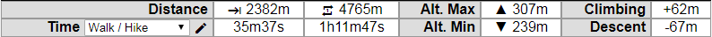
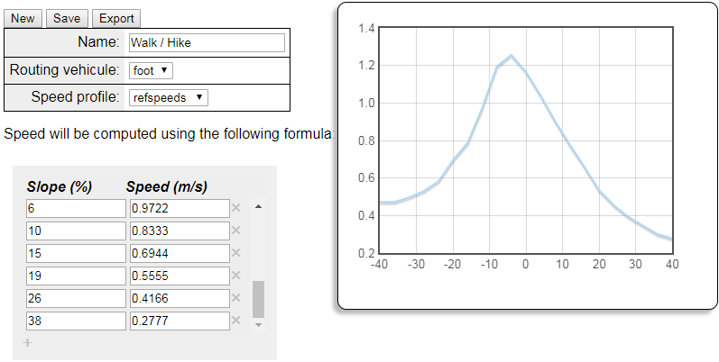
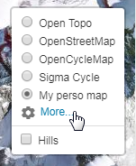
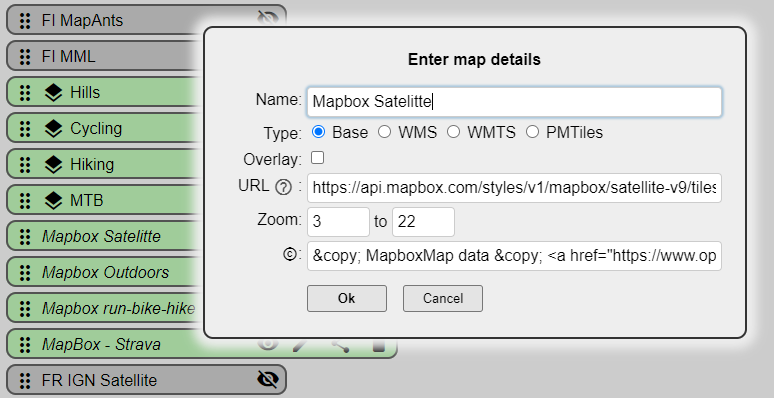
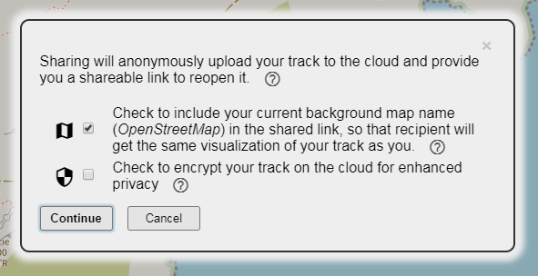
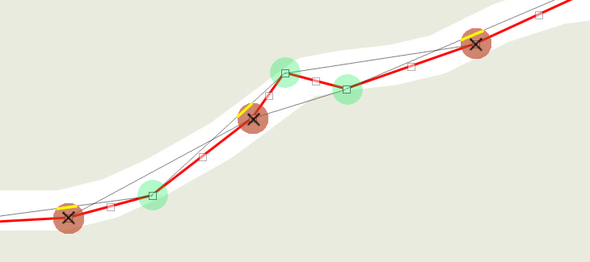
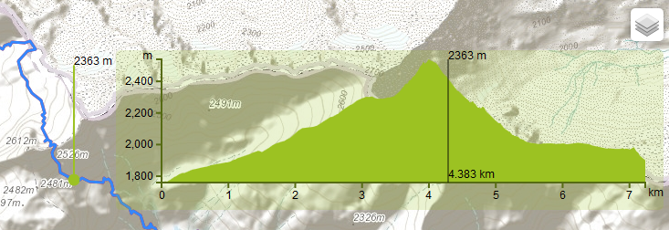
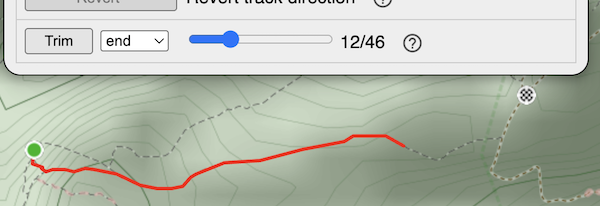

WTrack is a simple and efficient online track editor for outdoor activities
It features:
- Step-by-step track edition
- Multi-segment track management
- Automated track edition using routing engine
- Named waypoints
- Useful track edition tools, such as compress, elevate and trim
It is free and offered to you without any guarantee
Features
Edition tools
- Step-by-step edition: Click on map to create new track points, move points by dragging them, and create intermediate points by clicking on grayed markers. Click on a marker to get detailed information about this track step, and get the option to delete it.
- Routing edition: Click on map to set the starting point and destination, the routing engine will automically compute the track following map constraints. Click on the route to create intermediate waypoints that you may drag around.
- Open and edit multi-segment tracks. Create and delete segments using the "+" and "-" icons in the edition tools. Use the "Join Segments" tool to combine all segments into a single one. Split a segment in two by clicking on the scissors () in a track point popup dialog.
- Create named waypoints: Click on map to set points of interest. Click on a waypoint to edit its name.
Statistics
Real-time statistic data about your track
- Distance: One way () and round-trip () lenght of the track
- Duration: Estimated duration (one way and round-trip) of the track itinary based on the activity type. Default activities and timings, but you can configure your own, see below
- Maximum and minimum altitudes of the track
- Cumulated climbing and descent heights

Activity editor
Define your own type of activity, which will be used to computes track duration.
- Several timing models: reference points, linear polynomial...
- Automatic computation from a reference recorded track
- Share and import personal activities

Personal map configuration
Configure the list of background maps in the top right selector
- Define your preferred map order
- Hide/Show maps of your choice
- Configure your own personal map (standard tile layers or WMS/WMTS)
 
Sharing
- Provides a shareable link to reopen current edited track anytime and anywhere
- Anonymous storage in the cloud
- Optional sharing of the background map
- Optional encryption in the cloud
- Link available as a QRCode for easy mobile capture
The simplest way to share a track is using the "Share" button from the File menu tab.

Altenatively, you can manually build a shareable URL using the following syntax:
https://opoto.github.io/wtracks/?url=<link to online track file>[&<option>=<value>]
where parameters are:
- url is a HTTPS URL to a GPX/KML/GEOJSON track file. Encode the URL if it contains ? or & or other special characters.
- map is the name of the map as is appears in the top-right map selecetor. Map name with special characters need to be encoded. In particular, space must be replaced by + sign.
- ext is the extension/type of the track to use for parsing it. By default the end of the URL will be considered as the extension of the file. If it is not one of '.gpx', '.geojson', or '.kml', define it using the 'ext' parameter.
- noproxy=true when access to the track URL requires credentials provided by your browser (e.g., being logged in to a remote server). This requires the server hosting the track to support cross-origin requests. If not set, the file will be loaded by a intermediate proxy, removing the cross-origin constraint, but without your credentials.
Example of shareable URL:
https://opoto.github.io/wtracks/?url=https://www.visugpx.com/download.php?id=1320934523&ext=gpx&map=Sigma+Cycle
Compress
- Reduces file size
- Consumes less browser memory and processing, leading to faster editor execution
- Simplifies step-by-step track edition, by only keeping most relevant points
This tools looks at each point in a track, and measures its distance from the line between the previous and next points. If this distance is smaller than the configurable value (e.g., 5 meters) then the point is deleted.

Elevate / Cleanup
Performs bulk operations on track points' elevation:
- Elevate computes the elevation of each point of the track. If an elevation value was already stored, it is overridden with new computed value. Due to the elevation service payment fees, we limit the number of computed elevation values to 512 per track.
- Cleanup selectively deletes each track point's elevation and time data.
You can display a graphical interactive height profile of your track by clicking on the statistic table at the bottom of the map.

Revert
Inverts a track so that start point becomes the end point.
Trim
Trimming is an easy way to quickly delete track points at the beggining or at the end of your track. Select which end of the track you want to trim, then use the slider to define the number of points to remove. The map shows the result in real-time.

Configurable
Rich configuration settings
- Persistent settings: Activate persistence of your settings so that your browser stores your WTracks preferences, and restores them on each of your visits. See privacy section for more details.
- Personal background map: Define your own map backgrounds in WMS or WMTS format (see above).
- Personal activities: Define your own activities based on your individual performances (see above).
- Track display: Define the color and width of the track on the map.
- API keys: Set and use your own Google and GraphHopper API keys in order to overcome the WTracks quota limit.
- Distance Unit: Choose between metric and imperial units.
Third-parties libraries and services
WTracks uses the following external components:
- OpenStreetMap: A map of the world, created by people like you and free to use under an open license.
- Leaflet: Open-source JavaScript library for mobile-friendly interactive maps.
- Leaflet.Editable: A Leaflet plugin to make geometries editable.
- Leaflet.FileLayer: A Leaflet plugin to load files (GeoJSON, GPX, KML) into the map without server call.
- FileSaver.js: A polyfill implementing the saveAs() FileSaver interface in browsers that do not natively support it.
- Leaflet.GeoSearch: A Leaflet control tool to lookup for addresses using OpenStreetMap.
- GraphHopper: An online routing service.
- Leaflet.Elevation: A Leaflet plugin to display an interactive height profile of a track.
- Leaflet Routing Machine: A Leaflet plugin to add routing to a map.
- Google Map APIs: Online service to get elevations of latitude/longitude coordinates
- Open Elevation: Online elevation service used when our Google quota is exhausted
- extreme-ip-lookup.com: an online service to search the geolocation of IP addresses, so that we can center the map on your current location
- jscolor Color Picker: The color picker widget to configure the track color
- Cookie Consent: to get your consent about storing cookies.
- Friendpaste: Cloud storage used for sharing tracks.
- file.io: Temporary cloud storage used for dropbox uploading.
- draganddrop.js: jQuery plugin to allow dragging and dropping of list elements.
- BrowserStack: Cross-browser testing tool, kindly offering free plans to Open Source projects :)
Thanks to all of those who contribute to these awesome projects!
Privacy
WTrack is a client-side application! The server only provides the files (web pages, images, scripts, stylesheets) that will be processed by your browser. Once these files are loaded, your browser doesn't use the server anymore, all the application runs in your browser, there is no more communication with our server during execution. Our server is hence not even aware of your activity. However the application uses some third-party services that interact with backend servers, such as the one providing the map images, the elevation data, or geolocation.
In order to enhance your experience, the application stores some data in your browser, to restore your preferred settings accross different visits. This data includes your selected map style, activity type, or your last position. This information is stored in your browser local storage, which protects its disclosure. Again, this data is not known, processed nor stored by our server.
WTrack uses Google Analytics to monitor activity and help identify which features need to be enhanced.
Contact
WTrack is a "hobby" project, developped in my free time, please consider it with indulgence :)
Feel free to send me comments
You can also join the online forum to share questions and hints with other WTracks users
The application code is available on GitHub, where you can file issues and suggestions.